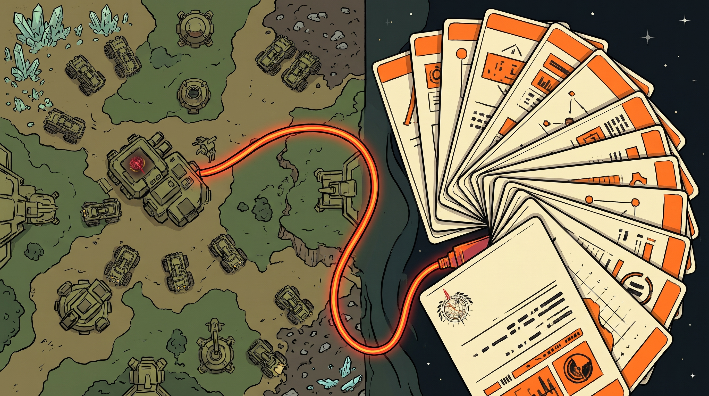

The idea, in one paragraph
This is the bridge I wanted as a strategy player who also studies with Anki: while you play a game of OpenRA, your in-game resources show up in Anki once it is properly connected, and you work through flashcards connected to your play session. The battle map and the flashcard deck, wired together.
Installation
- Download the source and build it using the instructions in the repo.
- Add
anki_ra.pyto your Anki2 addons folder. - Start Anki and OpenRA, and start playing a game.
- Your resources will show up once Anki is properly connected.
- Rip through flashcards.
About the engine
OpenRA is a libre and free real-time strategy game engine supporting early Westwood classics. The distributed mods include reimaginings of:
- Command and Conquer: Red Alert
- Command and Conquer: Tiberian Dawn
- Dune 2000
The upstream project lives at openra.net, with its wiki, forums, and mapping and modding guides linked from the README.
Build on macOS
The repo documents a macOS build sequence: Homebrew, the dotnet 6 package and the dotnet SDK cask, Xcode command line tools, MacPorts with msbuild, then make. The full sequence, exactly as written, is in the README:
brew install dotnet@6
brew install --cask dotnet-sdk
sudo port install msbuild
sudo makeLicense: OpenRA is free software under the GNU General Public License, version 3 or later, per the COPYING file and the README license note. Copyright 2007 to 2020, the OpenRA Developers.